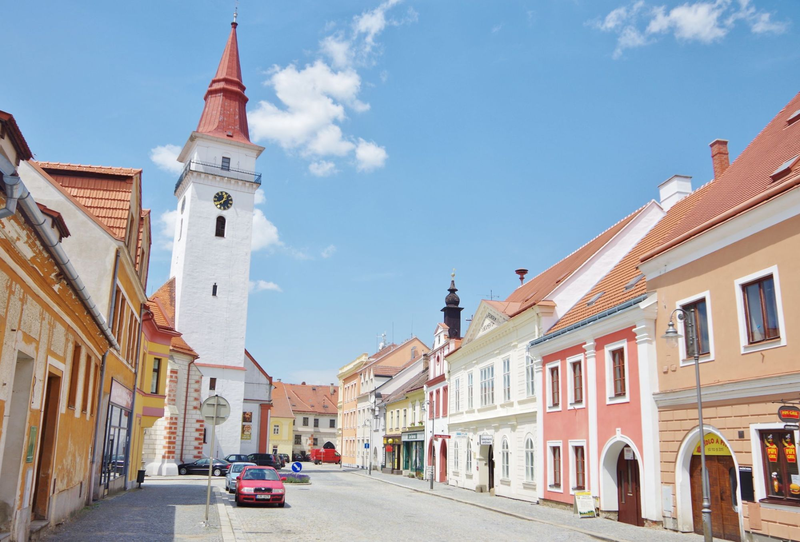

Jsem Ondřej Kadlec, finanční poradce z Jemnice. Pomáhám lidem, aby jejich úspory nezahálely.
Kancelář: Havlíčkovo náměstí 8, Jemnice
Nejdřív zjistím, co máte a kam chcete dojít. Teprve potom řeknu, jestli a co změnit.
Komu už pomáhám
100+
klientů mi už svěřilo své peníze.
S každým z nich jsme začali stejně: jednou schůzkou, na které se nic nepodepisuje.
Když je úrok nižší než inflace, úspory na účtu pomalu ztrácejí hodnotu. Ukážu, jaké jsou možnosti podle toho, kdy budete peníze potřebovat. Část má smysl nechat po ruce jako rezervu.
Poplatky za vstup, správu a fondy se sčítají a za roky ukrojí víc, než čekáte. Spočítám, kolik dnes platíte a co by stálo totéž jinde.
Začneme cílem a termínem. Pak spočítáme, kolik měsíčně odkládat a do čeho.
Spočítáme, kolik budete potřebovat. Pak nastavíme penzijní spoření a DIP (dlouhodobý investiční produkt) tak, abyste využili státní příspěvek i daňový odpočet.
Investování je spojeno s rizikem. Hodnota investice může klesat i stoupat a návratnost vložené částky není zaručena.
Banka vám pošle nabídku a čeká, že ji podepíšete. Než to uděláte, porovnám ji s tím, co by vám dnes daly ostatní banky — včetně možnosti zůstat, pokud je nabídka férová.
Starší životní pojistky často kryjí málo a stojí hodně. Projdu, co přesně máte, a řeknu, co dává smysl ponechat, upravit nebo zrušit.
Spočítám, jestli by sloučení úvěrů snížilo splátku i celkovou přeplacenou částku — a kdy se naopak nevyplatí.
Pět oblastí, ve kterých lidé nejčastěji přeplácejí, aniž by o tom věděli.
Dvě schůzky na začátku. Pak spolupráce, která nekončí podpisem.
Ozvu se do 24 hodin a najdeme termín. Sejdeme se v Jemnici, nebo přijedu za vámi domů.
Nejdřív to, kam chcete dojít — bydlení, rezerva, děti, důchod. Teprve potom se díváme, jestli vás tam vaše smlouvy dovedou. Na schůzce se nic nepodepisuje.
Většina poradců zmizí po podpisu. Já ne. Pravidelně dostáváte report, jak si vaše peníze vedou proti cílům, které jsme si stanovili. A v klientské zóně máte smlouvy, dokumenty i přehled na jednom místě — kdykoli si je otevřete.
Vytvořil jsem vlastní systém, ve kterém s vámi plánujeme. Co spolu probereme na schůzce, máte pak doma v klientské zóně. Kdykoli, i z mobilu, bez hledání po šuplících.
Přihlášení odkazem z e-mailu, bez hesla.
Vstoupit do klientské zónyObrázky jsou ilustrativní, s ukázkovými daty.
Ozvu se do 24 hodin. Kancelář: Havlíčkovo náměstí 8, Jemnice